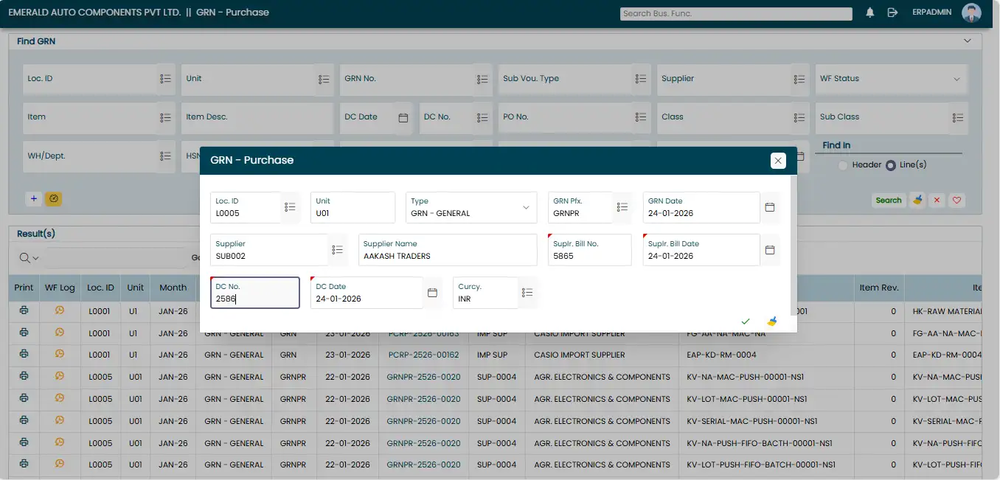
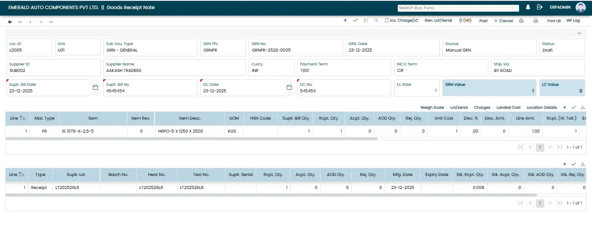
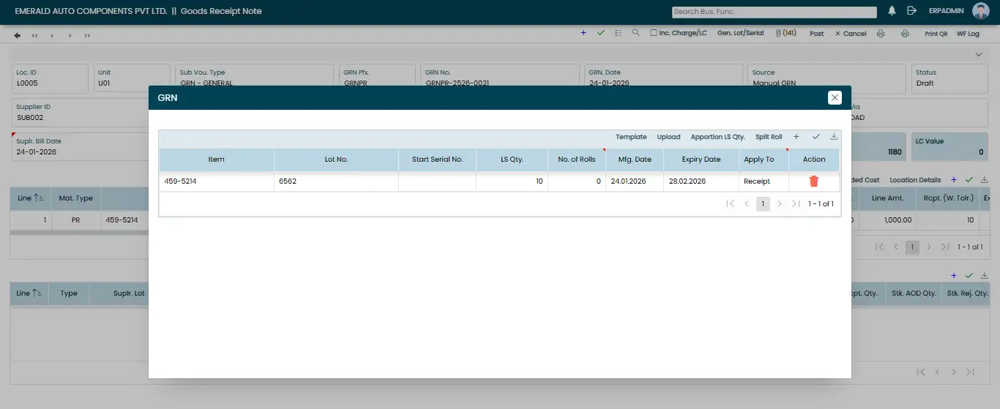

<div data-category="Purchase Order" data-title="GRN PR" data-updated="December 01, 2025" data-contributors="RoadmapIT" data-breadcrumb="Home,Purchase Order,GRN PR">
  <div class="page-content">
    <p>The GRN PR screen is used for manual creation of purchase receipts. Details from purchase orders and gate entries are automatically generated and displayed in the GRN tab of the GRN Entry screen.</p>

    <h5>Navigation path:</h5>
    <p class="fs-6">Supply Chain \ Purchasing \ Transaction \ GRN - Purchase</p>

    

    <ul style="list-style-type: none; align-content: center">
      <li class="mouse-icon">Select the Unit location, Unit details will be auto updated.</li>
      <li class="mouse-icon">GRN Date is updated with sys date.</li>
      <li class="mouse-icon">Select the corresponding Prefix and Select the supplier from the LOV.</li>
      <li class="mouse-icon">Enter Suplr Bill No & DC No.</li>
      <li class="mouse-icon">
        Click on
        <i class="bi bi-check-lg fs-4 mx-1 text-success"></i>
        button to create the GRN.
      </li>
    </ul>

    

    <ul style="list-style-type: none; align-content: center">
      <li class="mouse-icon">Enter the Accepted quantity for the item; if quality is not enabled for the item.</li>
      <li class="mouse-icon">If the item is defined as ‘Serial’, ‘Lot’ in Item configuration, then Generate the lot serial No.</li>
      <li class="mouse-icon">Lot/Serial details will be updated in Lot/Serial details dialog.</li>
      <li class="mouse-icon">Accepted quantity can be edited, for the QC required “No” item and hence the Rejected quantity will be auto updated.</li>
      <li class="mouse-icon">Excess Quantity supplied from the supplier will be updated in this field.</li>
      <li class="mouse-icon">If the item is defined as ‘free pass’ then the status of the GRN will be updated as “QC completed”.</li>
      <li class="mouse-icon">If QC is defined as ‘always’ for the item else status is updated as “Draft”.</li>
      <li class="mouse-icon">Warehouse can be modified, to store the item other than the default warehouse.</li>
      <li class="mouse-icon">Cancel button is used to cancel the purchase receipt.</li>
      <li class="mouse-icon">The Document will move on to the Pending PO screen if cancelled.</li>
      <li class="mouse-icon">The Document will be sent for approval using the post button.</li>
      <li class="mouse-icon">The necessary work flow operations are done in the Workflow document control screen.</li>
      <li class="mouse-icon">To approve the document, Navigate to the Workflow approvals screen.</li>
      <li class="mouse-icon">
        Click View details
        <i class="bi bi-info-circle text-primary"></i>
        For specific document.
      </li>
      <li class="mouse-icon">Screen navigate into query screen to check the details.</li>
      <li class="mouse-icon">After click the back button document navigate into Approval screen.</li>
      <li class="mouse-icon">Choose the Approval/forward/Return button field and click Process button required process performed.</li>
    </ul>

    <p class="fst-italic">Note: Sum of Accepted quantity and rejected quantity should not exceed the receipt quantity.</p>

    <p>This screen is used to enter the Lot details or to create the Lot no. of the Item. The Lot quantities are updated to the receipt lines once the Apportion Lot Qtys. Button is clicked.</p>

    
  </div>
</div>
